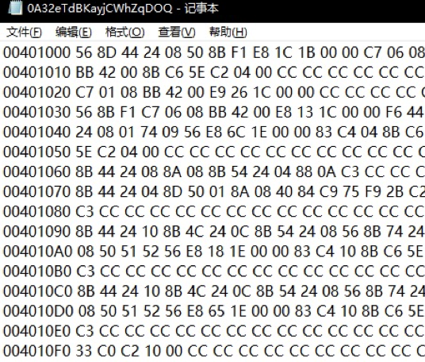
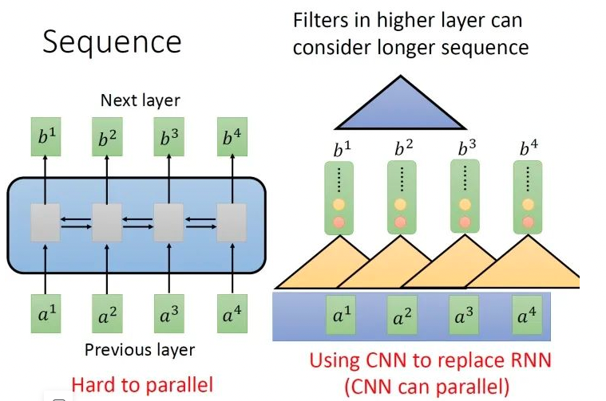
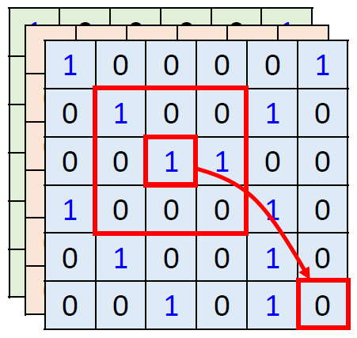
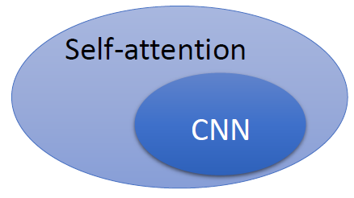

整体思路
将恶意软件的PE十六进制机器码转换成序列，再根据ASCII码表将序列值转化成像素点的数值，最后用多种方法填充成一幅图像，供Vision Transformer模型进行分类。
1.简要前言：转换成图像的意义
可以利用视觉领域先进的模型与算法，更好的提取PE恶意软件十六进制代码里的特征。

上图就是我们直接读取可执行PE文件的十六进制代码的结果。最左边一列是这些代码在虚拟内存中的地址，右边是每个地址存储的待执行代码。很明显几乎不可能直观的看出来这些代码的逻辑和操作。而如果用机器学习进行分类，就需要很多关于此类数据的先验知识对这些数据进行特征提取或降维。而深度学习模型的一个特点就是能够找到众多输入数据中所包含的特征，如图像分类问题中，CNN有能力识别到指定图片中目标对象的类别。因此直觉上深度学习模型是处理此类问题十分有效的工具。
而深度学习模型的输入数据一般是统一成一个指定类型的数据。目前图像领域里有很多sota模型可以对图像类数据的特征进行提取，分类，因此如果能让输入数据具备类似图像上的特征，即像素点数据分布的特征，那么就可以利用视觉类深度学习模型来处理恶意软件的分类问题。所以如何将恶意软件进行图像化就是一个很重要的问题了。
使用视觉类DL模型的另外一个原因是恶意软件的序列并不是严格意义上的时间序列，而是包含了丰富的语义特征的序列，就像NLP里单词和单词之间，单词与句子之间的语义一样。用于NLP模型的恶意软件数据集很难构建出来，因为需要大量的可执行文件反汇编，逆向工程的先验知识。因此图像类深度学习模型，或者由NLP领域发展而来的Vision Transformer模型是目前我实验中比较有效的模型。
2.Vision Transformer特点
Vision Transformer模型的特点是和self attention模块的功能高度相关的。从宏观上来说，self-attention layer能够并行输入一个sequence，输出一个sequence，它的每一个输出都看过了整个的输入sequence，这一点与bi-directional RNN相同。但是神奇的地方是：它的每一个输出都可以并行化计算。

用CNN，你确实也可以做到输入是一个sequence，输出是另外一个sequence。但是，表面上CNN和Vision Transformer可以做到相同的输入和输出，但是CNN只能考虑非常有限的内容。比如在我们下图中CNN的filter只考虑了3个vector，不像RNN可以考虑之前的所有vector。但是CNN也不是没有办法考虑很长时间的dependency的，你只需要堆叠filter，多堆叠几层，上层的filter就可以考虑比较多的资讯，比如，第二层的filter (蓝色的三角形)看了6个vector，所以，只要叠很多层，就能够看很长时间的资讯。
做CNN的时候是只考虑感受野红框里面的资讯，而不是图片的全局信息。所以CNN可以看作是一种简化版本的self-attention。
或者可以反过来说，self-attention是一种复杂化的CNN，在做CNN的时候是只考虑感受野红框里面的资讯，而感受野的范围和大小是由人决定的。但是self-attention由attention找到相关的pixel，就好像是感受野的范围和大小是自动被学出来的，所以CNN可以看做是self-attention的特例，如图所示。


既然self-attention是更广义的CNN，则这个模型更加flexible。而我们认为，一个模型越flexible，训练它所需要的数据量就越多，所以在训练self-attention模型时就需要更多的数据，论文 ViT 中有印证，它需要的数据集是有3亿张图片的JFT-300，而如果不使用这么多数据而只使用ImageNet，则性能不如CNN。